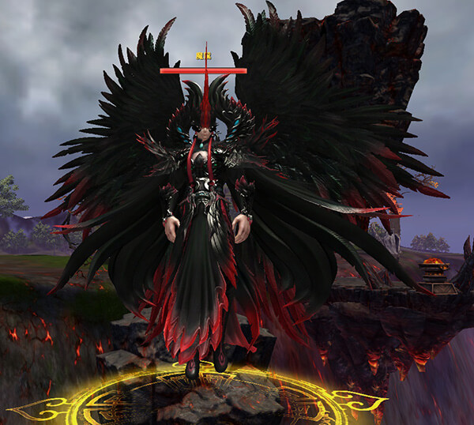
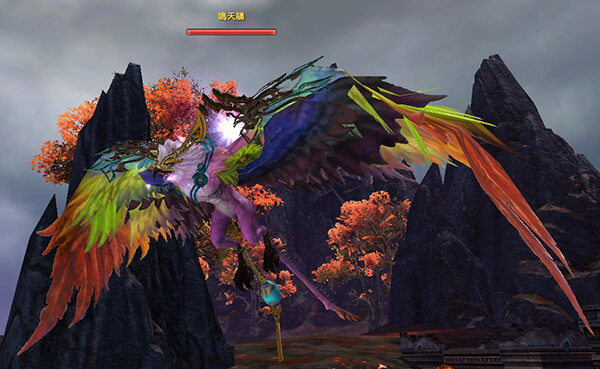

千翎族的守望者無心，在魔界被歸墟老人所擒，直至玩家將其從魔界救出。
誰知早在魔界之中時，她身上就被魔界的魔君悄然種下一道魔念，在她識海中生根發芽，終於有一天， 趁無心練功時猛然爆發，使其走火入魔。無心渾渾噩噩，被魔念驅使著，試圖回到冷魂峪，再次打開魔界之門。
無心努力壓制這股魔念，前往冰火集尋求聖獸的幫助，聖獸發現了她身上的魔意，打算清除這股魔念，於是將冰火集中的一件寶貝拿出來， 借用法寶的能力淨化她。不曾想這股魔念乃是魔君所下，竟透過法寶將法寶污穢，甚至把幾位聖獸也腐化了。
冰火集頓時風雲大作發生了巨變，無心淪為魔君的手下，並收服了幾位聖獸，在冰火集圖謀進攻冷魂峪的計畫。
完成火雲窟任務，等級80級，至蜀山山門尋找璇璣接取任務
全新75級冰火秘藏三大團隊副本 震撼開啟！
本是冰火集的守護聖獸之首，統禦冰火集萬禽。當無心被魔念侵蝕後，收留了無心為她治療，卻一時不慎被魔君藏在無心體內的魔氣暗算，墮落為魔。
魔鷲的配偶，善用清脆的鳴叫喚起本性至善。在魔鷲入魔後，試圖喚回他的理智，卻被魔化後的無心和魔鷲聯手擒住，也被魔念入體。在冰火集上空徘徊不休，等待救贖。
掌管冰火集冷熱交替的聖獸，每當冰火集的氣候失調，他們便會化身出現，守護冰火集生物的安全。在無心入魔之後，挺身而出對抗無心，仍舊不敵魔君之力，被魔氣侵蝕，不再恪守自己的職責，轉而使用無盡的冰火之力毀滅眾生。